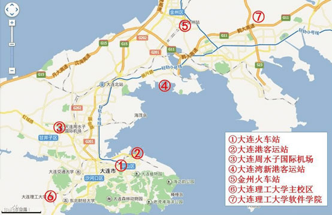
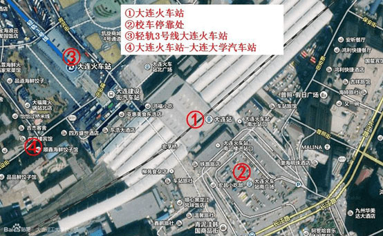

大连主要交通枢纽与大连理工大学主校区、大连理工大学软件学院的分布

大连有机场，火车站和码头。大连理工大学在报到的时间里会安排校车在火车站和码头接送新生。
大连火车站示意图

a．校车（5:30 – 22:00，限规定报到时期，免费，约1小时）
在规定报到的那几天，软件学院会安排校车在火车站免费接送新生。乘坐校车可以直接在软件学院生活区宿舍楼下下车，可以省不少的力气搬行李。
注意：软件学院与其它学院不在一个校区，请一定认准乘坐开往软件学院的校车。
b．“大连火车站 - 大连大学”公交车（6:00 – 19:30，10元，大件行李每件额外2元，约1小时30分）。俗称“小客”。车站在火车站北门附近。从南门出火车站需要右拐，过宏孚桥后左拐直走；从北门出火车站后左拐直走，在永和豆浆门前。 上车后，告诉售票员在“软件学院”下车，每人10元（2014年6月数据），大件行李需要放在车下的行李箱，每件2元。夜班车及恶劣天气情况下可能涨价。此车在软件学院生活区北边路口停车。
c．大连轻轨 转 开发区2路公交车（6:00 – 20:00，5元+1元，行李视情况另算，约1小时30分）。本方案比较复杂。如果你带有大件行李，严重不推荐。如果你没有带行李，在无校车的情况下则推荐此路线，较快且便宜。 首先，需要到轻轨站购票，本站站名为“大连火车站”，购开往“保税区站”的票一张，5元。大件行李看人品，理论上每件2元。 抵达保税区轻轨站后，出站向右走，在路口左转，下一个路口再左转，前方20米左右可看到2路公交车车站。乘坐开往松岚村方向的2路公交车，在“开发区一中”车站下车。下车即是软件学院教学区，从教学区继续步行前往生活区。
d．出租车（约1小时）。大连市出租车计费标准为起步3公里10元，计里程同时计时。超过3公里每公里2元，低速行驶或者等待前5分钟免费，超过5分钟每分钟0.3元（2013年数据）。
可以与出租车商定价格不按正常计费。通常在100元左右。比打表走多费钱。
e．金州火车站方案（约20分钟）如果你乘坐的火车经停金州站，可以选择在金州站下车前往软件学院，能够节省不少时间。在金州火车站下车后，乘坐出租车（约25-30元，约20分钟）到达软件学院。
大连有两个码头，按以往的经验是两个码头都会有软件学院的校车接送。下面仅说明没有校车时的选择。
大连港客运站：
a．打车去大连火车站，10元，约10分钟。建议告诉司机到火车站北门或到火车站的轻轨站，换乘较近。
b．乘坐13路公交车，1元，约30分钟，终点北行300米即是大连火车站南广场，穿过宏孚桥到达北广场。
之后就按从火车站出发的路线来吧。
大连湾新港客运站：
a．打车到软件学院，30至40元，约30分钟。
b．打车到大连湾轻轨站，10元，约10分钟，乘坐轻轨到达保税区，之后继续按照火车站的方案c到达软件学院，此方案较实惠，但在行李多的情况下不便。
c．乘坐客运站提供的班车到大连火车站，免费，约1小时，之后按火车站出发的路线，此方案绕路，不推荐。
机场没有校车接送。
方案有：
a．打车到软件学院，100元左右，约1小时。
b．打车到火车站，20元左右，约30分钟，之后参照火车站的方案。
c．坐公交车去火车站，不推荐，慢，约1小时，之后参照火车站的方案。
d．坐开发区方向的机场巴士直达软院（50元）